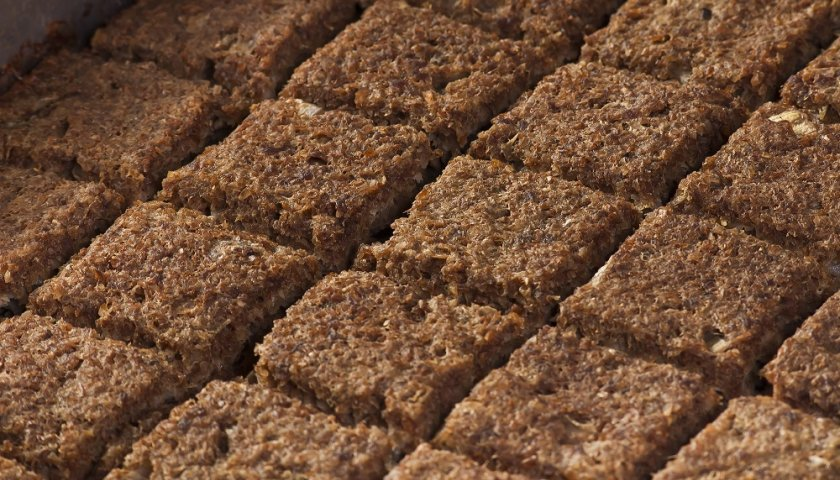
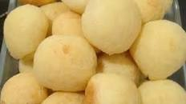
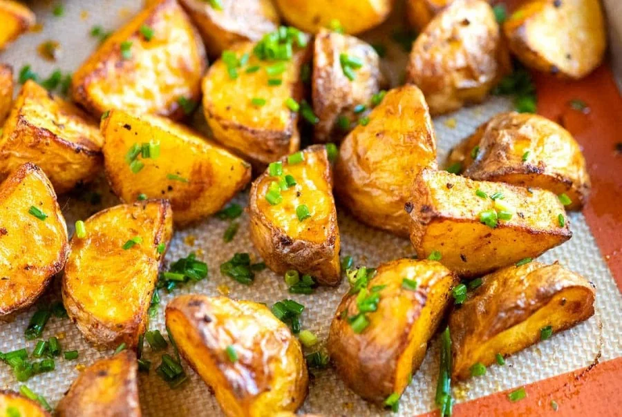
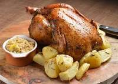
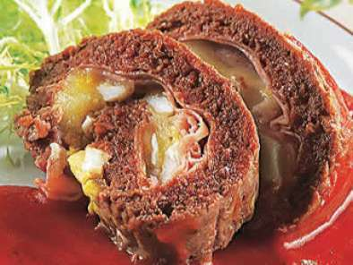

☰
X
Inicio
Micro-Ondas
fogao a Lenha
Assados
Sobremesas
Fritos
Comidas feitas em um Forno
Kibe Assado

Uma deliciosa receita de Pao de Queijo Mineiro
rende 50 porçoes
Pagina da Receita
Pão de Queijo

Uma deliciosa receita de Pao de Queijo Mineiro
rende 50 porçoes
Pagina da Receita
Cupim Assado
Uma deliciosa receita de Pao de Queijo Mineiro
rende 50 porçoes
Pagina da Receita
Batata Assada

Uma deliciosa receita de Pao de Queijo Mineiro
Pagina da Receita
Frango Assado

Uma deliciosa receita de Pao de Queijo Mineiro
Pagina da Receita
Assado Vienense

Uma deliciosa receita de Pao de Queijo Mineiro
rende 50 porçoes
Pagina da Receita